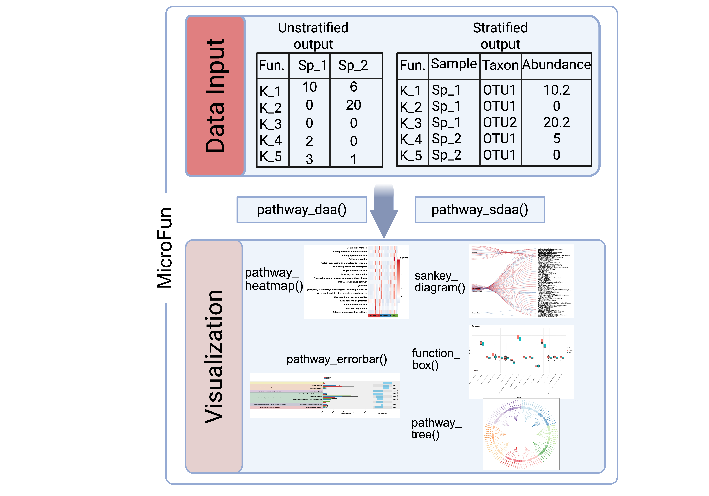

# Install devtools if you haven't already
install.packages("devtools")
library(devtools)
# Install the package from GitHub
install_github("bioscinema/MicroFun")
# Load your package
library(MicroFun)MicroFun
MicroFun: an R package for downstream analysis and visualization of PICRUST2 output
16S rRNA sequencing and shotgun metagenomic sequencing are two widely used approaches in microbiome research. While shotgun metagenomics enables direct species- or strain-level identification and functional profiling, its high cost, large data volume, and computational demands limit its accessibility. In contrast, 16S rRNA sequencing is more cost-effective and computationally efficient but requires predictive bioinformatic tools, such as PICRUSt2, to infer functional potential from taxonomic profiles. Despite the availability of such tools, functional prediction in 16S-based studies remains underutilized, and downstream statistical analyses often fail to connect significant functions to the taxa driving them. Existing resources, such as the widely adopted R package, facilitate community-level functional analysis and visualization but do not address the complexity of PICRUSt2’s stratified outputs, which attribute functions to individual taxa. Here, we introduce , an enhanced and extended version of designed for efficient analysis of stratified outputs. enables rapid import of large datasets, streamlined statistical testing, and publication-ready visualizations, bridging the gap between taxonomic identity and functional contribution. By integrating community- and taxon-level analyses in a unified framework, expands the analytical capacity for 16S rRNA functional predictions, enabling more biologically interpretable insights into microbial community function.

Table of contents
Introduction
The MicroFun R package is an extension of ggpicrust2. The original ggpicrust2 package helps researchers perform downstream analysis and visualization of PICRUSt2 standard (community-level) outputs, and has been cited 186 times since its release, underscoring strong community demand. Because PICRUSt2 can also produce stratified outputs that attribute predicted functions to individual taxa, we developed MicroFun to unify analysis and visualization across both output types.
MicroFun retains the streamlined workflows of ggpicrust2 for standard outputs while adding scalable, taxon-resolved capabilities for stratified data. This integration enables users to move seamlessly from community-level summaries to taxon-specific functional contributions, providing a more complete and interpretable view of microbiome function.
Installation
You can install MicroFun R package by:
Tutorial
To brdige to gap between upstream and dwonstream, we will provide detailed tutorial from how to use PICRUST2 to generate output then how to apply MicroFun to these results.
Contact
Any questions or suggestions on MicroFun are welcomed! Please report it on issues, contact Ruitao Liu (rxl761@case.edu).